ГЕНЕРАТИВНЫЙ ДИЗАЙН: PROCESSING
2023
Привет!
Меня зовут Илья Зуев.
Я Frontend-разработчик, вертикаль "Сбережения"


Max Cooper - Order from Chaos
CREATIVE CODING
Arts
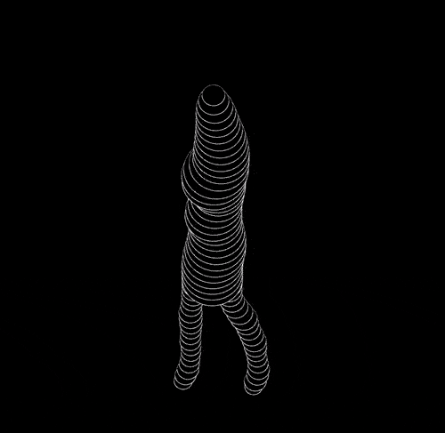 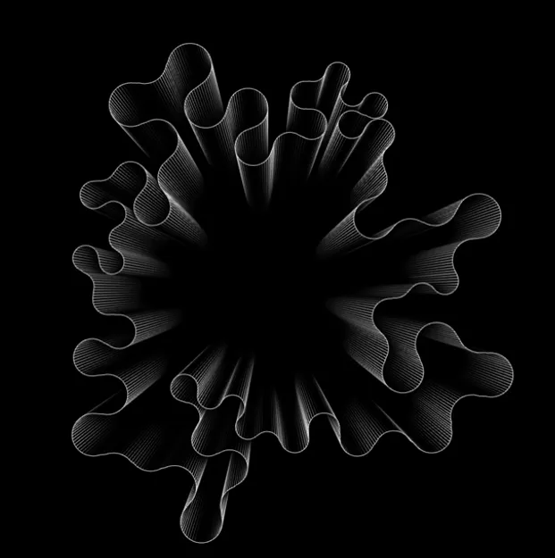 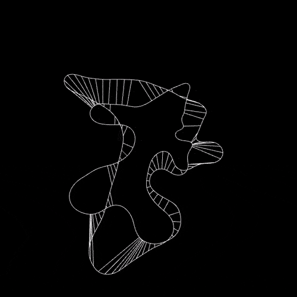 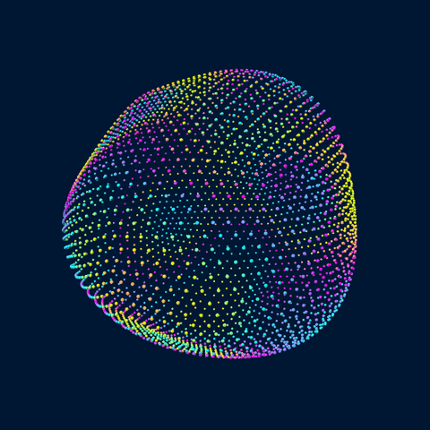 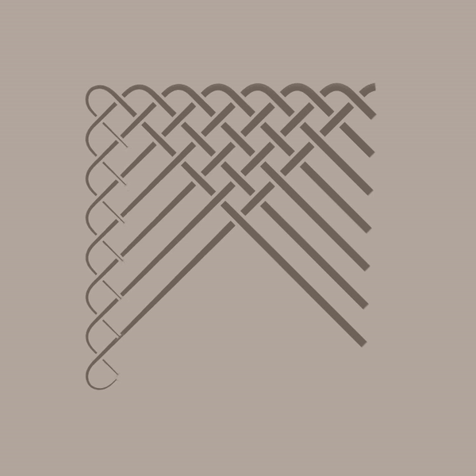
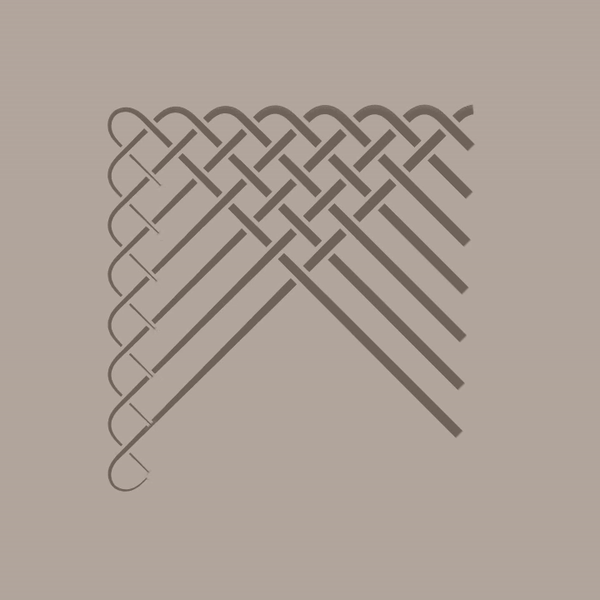

Exhibitions


С чего начать?
PROCESSING
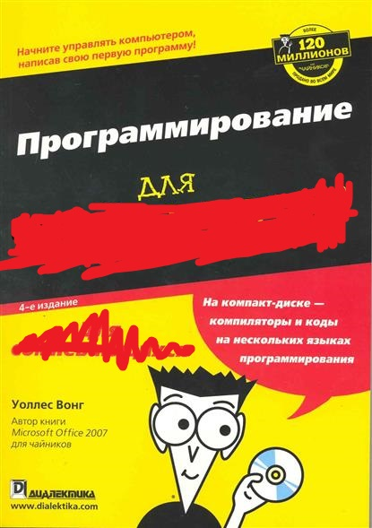

Daniel Shiffman
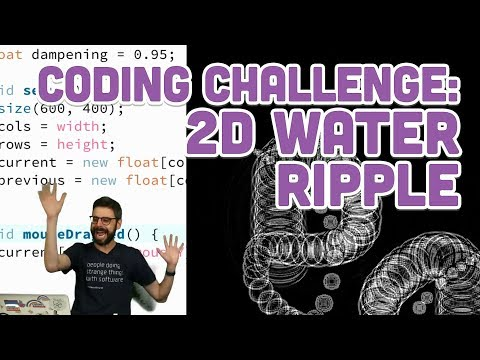Perlin Noise
Reaction Diffusion

Voronoi diagram
 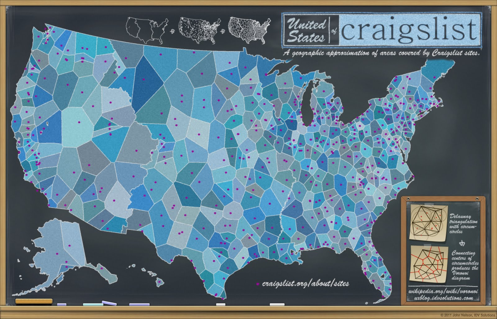
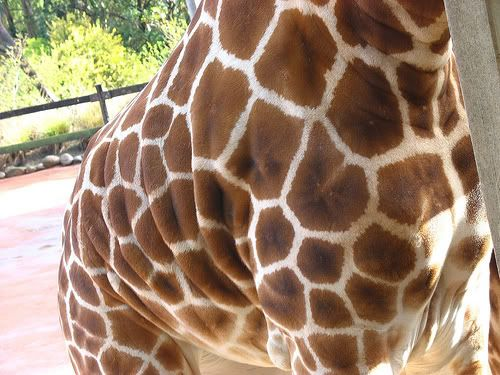
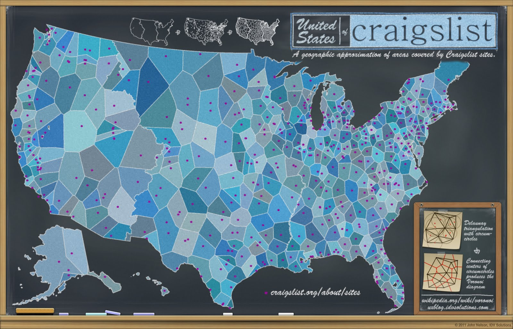
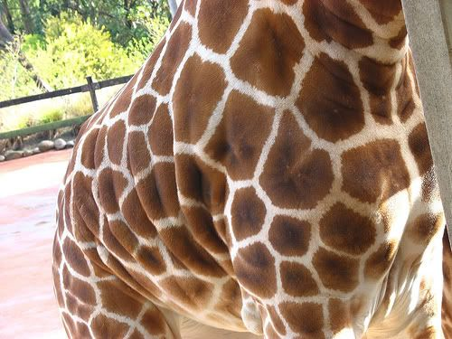
Зачем?
1) Это весело
2) Хороший старт, если хочешь научиться работать с графикой
3) Если хочется вспомнить тригонометрию и физику
4) Узнать подходы и способы визуализации данных
- -Processing-
- processing.org
- p5js.org/
- shiffman.net
- natureofcode.com
- -Community-
- www.openprocessing.org
- vk.com/invisart
- www.youtube.com/channel/UCvjgXvBlbQiydffZU7m1_aw
- -Others-
- twitter.com/beesandbombs